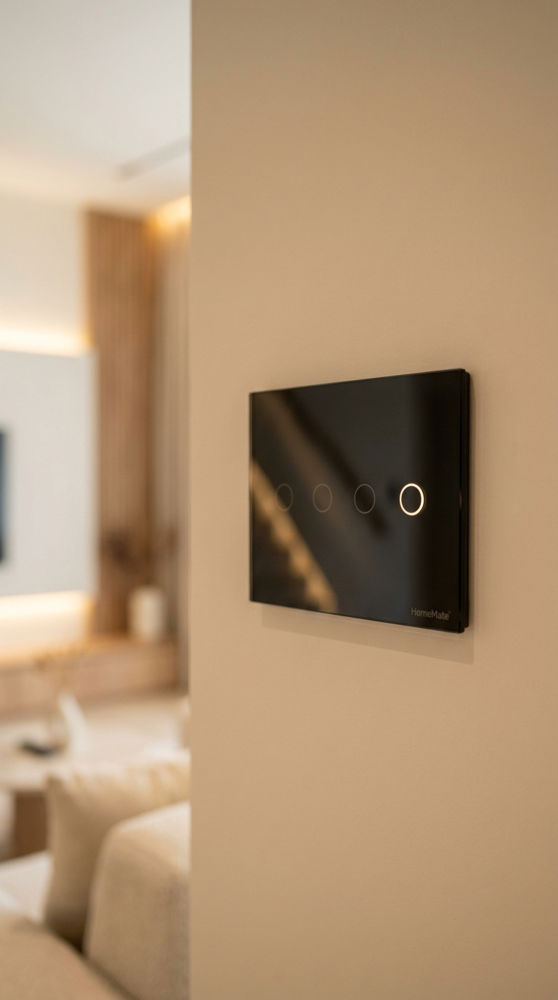

Overview
What is Sustainable & Zero Waste Living?
Sustainable and zero-waste living are lifestyle approaches aimed at reducing human impact on the environment. They focus on minimizing resource consumption, cutting down waste, and making conscious choices that support long-term planetary health.
Sustainable Living
Making eco-friendly swaps that reduce waste, conserve energy, and support a healthier planet. This includes choosing renewable energy sources, supporting local businesses, and adopting greener transportation and food habits.
Zero-Waste Living
Going a step further by aiming to send no waste to landfills or oceans. The goal is to redesign consumption patterns so that all products can be reused, repaired, recycled, or composted naturally.
Eco-Friendly Kitchen Essentials

Kitchen Essentials
Simple Swaps, Big Impact
Switching to eco-friendly kitchen swaps like glass storage jars, reusable produce bags, and bamboo utensils is an easy way to reduce waste, save money, and protect the planet. These are simple changes that make a real difference every day.
My Recommendations & their benefits

Glass Storage Jars
Glass jars are reusable, non-toxic, and 100% recyclable. They keep your pantry organized without relying on plastic, and they work beautifully for storing grains, snacks, spices, and dry ingredients of all kinds.
I use glass jars throughout my kitchen and they have genuinely changed how my pantry looks and functions. Everything feels cleaner, tidier, and completely plastic-free. I would not go back to plastic containers now.
Shop Now
Reusable Produce Bags
These bags replace single-use plastic produce bags at the grocery store, cutting down on landfill waste and plastic pollution. They are lightweight, washable, and strong enough to handle daily use without wearing out.
I bring these on every grocery run without thinking twice. Since I started using them, I have completely stopped reaching for plastic bags at the store. It is such a simple habit that saves a surprising amount of plastic over time.
Get It Now
Bamboo Utensils
Bamboo utensils are biodegradable, naturally durable, and made from one of the fastest-growing renewable plants on earth. They are a clean, practical replacement for plastic cutlery at home and when eating on the go.
I always keep a bamboo cutlery set in my bag and it has become second nature. They are lightweight, easy to clean, and I love knowing I am not creating unnecessary plastic waste every time I eat outside.
Shop Now
Beeswax Wraps
Beeswax wraps are a natural, plastic-free alternative to cling film. They are washable, reusable for up to a year, and fully compostable at the end of their life. They keep food fresh while being genuinely kind to the environment.
I replaced all my plastic wrap with beeswax wraps and honestly love using them. They work perfectly for covering leftovers, wrapping sandwiches, and storing fruit. They also look beautiful in the kitchen, which is a nice bonus.
Shop NowThese swaps reduce plastic use, lower your carbon footprint, and support a cleaner, greener lifestyle.

Everyday Swaps
Sustainable Swaps for Everyday Living
Incorporating compost bins, metal straws, and cloth napkins into your daily routine helps cut waste and protect the environment. These are easy habits that require almost no effort but deliver a lasting positive impact.
My Recommendations & their benefits

Compost Bins
A countertop compost bin turns everyday food scraps into rich, nutrient-dense soil for your garden. It reduces the amount of organic waste going to landfill and helps cut methane emissions that would otherwise be produced during decomposition.
I started composting not long ago and the countertop bin has made it surprisingly easy and mess-free. Watching food scraps transform into useful soil feels genuinely rewarding. It is one of those swaps that quickly becomes a natural part of your routine.
Shop Now
Metal Straws
Metal straws are built to last for years and replace hundreds of single-use plastic straws over their lifetime. They are easy to clean, come with a brush, and are available in various sizes to suit different drinks and cups.
I keep one in my bag and one in the car. It is such a small thing but it adds up fast when you think about how many plastic straws you skip in a year. They feel sturdy and look stylish, which makes it easy to stay consistent.
Get It Now
Cloth Napkins
Cloth napkins are washable, long-lasting, and eliminate the need for disposable paper products at the table. A set of good quality cloth napkins can last for many years, saving a significant amount of paper waste and money over time.
Once I switched to cloth napkins I never thought about paper ones again. They look so much nicer on the table and hold up well in the wash. It is the kind of swap that feels like an upgrade rather than a compromise.
Shop NowThese small changes make a big impact. Less waste, more reuse, and a healthier planet for everyone.
Green Energy & Minimalism

Green Energy
An Eco-Friendly Bright Room
A space filled with natural light, indoor plants, and solar-powered gadgets is both beautiful and eco-friendly. These simple additions bring nature and sustainability together inside your home without requiring major changes.
My recommendations and their benefits

Sheer Linen Curtains
Sheer linen curtains allow natural daylight to fill a room while still offering a layer of privacy. More natural light during the day means less reliance on artificial lighting, which directly reduces your electricity consumption at home.
Switching from heavy drapes to sheer linen curtains instantly made my room feel brighter and more open. I barely switch on the lights during daytime now. It is a small change that has a noticeable effect on both mood and energy use.
Shop Now
Indoor Plants: Peace Lily
The Peace Lily is one of the most effective air-purifying plants you can keep indoors. It removes common household pollutants, boosts humidity naturally, and adds a calm, vibrant energy to any room without requiring much maintenance.
The Peace Lily is my favourite indoor plant. It keeps my space feeling fresh and its white blooms are genuinely beautiful. It needs very little attention and thrives even in low-light rooms, which makes it perfect for most homes.
Shop Now
Solar-Powered Power Bank
This portable solar charger powers phones, tablets, and other small devices using sunlight. It charges itself outdoors and offers multiple USB outputs so you can stay powered up while travelling without drawing from the grid.
Having a solar power bank has been one of my favourite eco upgrades. It feels great knowing my devices are charged by sunlight. I take it on trips, to the garden, and anywhere I need power without wanting to plug into a socket.
Shop Now
Solar Powered Garden Lights
Solar garden lights absorb sunlight throughout the day and automatically illuminate your outdoor space at night. There are no wires, no electricity costs, and no switches to remember. They simply work on their own every evening.
These lights have completely transformed my garden evenings. They switch on automatically at dusk and create a warm, inviting glow without any effort or ongoing cost. I cannot imagine my garden without them now.
Get It NowA greener, healthier space lowers your carbon footprint and genuinely lifts your spirits every single day.

Plastic vs. Steel
Why Choose Stainless Steel
Plastic bottles are convenient but genuinely harmful. They are made from petroleum, are often used just once, take hundreds of years to break down, and can leach chemicals into your drink when exposed to heat or sunlight.
I stopped drinking from plastic containers a long time ago after learning how harmful they truly are for our bodies and our environment. I will never recommend anything made from plastic material.

Stainless Steel Bottles
Stainless steel bottles are reusable, toxin-free, and built to last for many years. They keep drinks cold for hours and hot drinks warm without any chemical leaching. They do not break down into microplastics and are fully recyclable at end of life.
Switching to a stainless steel bottle was one of the best decisions I made. My water stays cold all day, I no longer worry about chemicals from plastic, and I feel good knowing I am not adding to plastic waste. It is a swap I genuinely recommend to everyone.
Get It NowStainless steel is safer for your health and far better for the planet. It is time to ditch the plastic for good.
Smart Home Lighting & Energy Efficiency

Smart Lighting
A Home That Thinks For You
Modern homes are increasingly built around comfort, efficiency, and thoughtful energy use. Smart lighting adapts naturally to your daily routines, reducing electricity consumption without asking you to compromise on atmosphere or convenience.
My recommendations and their benefits

Motion Sensor Cabinet Lights
These lights switch on automatically when movement is detected and turn off on their own when a space is not in use. They are wireless, rechargeable, and require no drilling or complex wiring, making them ideal for closets, cabinets, and hallways in any home.
Having lights that respond to your presence rather than waiting for a switch feels like a genuinely smart upgrade. I installed a few in my wardrobe and hallway and they work perfectly every time. No more wasted electricity from lights left on by accident.
Shop Now
Smart Plugs
Smart plugs turn any ordinary device into an energy-aware appliance. You can schedule, monitor, and control lamps, fans, chargers, and kitchen appliances from your phone. They also eliminate standby power drain from devices left plugged in when not in use.
I use smart plugs throughout my home and they have made a real difference to my electricity use. Setting timers for lamps and chargers means nothing is drawing power unnecessarily. It is one of those upgrades that pays for itself quickly and keeps on giving.
Shop Now
Motion Sensor Stair Lights
Stair lights with motion sensors gently illuminate steps when someone is nearby and switch off automatically afterwards. They improve safety in darker areas of the home at night while using minimal electricity and blending beautifully into modern interiors.
These stair lights have added such a nice touch to my home. They create a soft, warm glow along the steps that looks elegant and feels reassuring at night. The automatic switching means I never have to think about turning them on or off.
Shop Now
Smart Light Switches
Smart light switches replace standard wall switches and give you full control over your home lighting through a mobile app, voice assistant, or scheduled timer. They manage entire lighting circuits at once, making them ideal for living rooms, kitchens, and outdoor areas.
Installing smart switches was one of the most satisfying upgrades I made to my home. Being able to schedule lights and control them remotely means I never leave the house wondering if I left a light on. It makes daily life smoother and genuinely reduces wasted energy.
Shop NowEvery small choice reflects a quieter intention. To live well, with care for both home and the world beyond it.
DIY & Natural Living

DIY & Natural Living
Homegrown Herbs & Compost Made Easy
Gardening at home is one of the most rewarding ways to live more sustainably. With the right tools and a little care, you can grow your own food, compost your waste, and create a small piece of nature right outside your door.
My recommendations and their benefits

Complete Garden Tool Set
This set includes ergonomic, rust-resistant tools designed for weeding, digging, and planting with ease. It typically comes with a trowel, pruners, a hand weeder, gloves, and other essentials that cover everything you need for regular garden care and maintenance.
Having a proper tool set made gardening so much more enjoyable for me. Every tool feels solid and well-made, the gloves protect my hands properly, and everything I need is right there in one place. It is the kind of kit that makes you actually want to spend time in the garden.
Shop Now
Outdoor Compost Bin
An outdoor compost bin turns garden clippings, fallen leaves, and kitchen scraps into rich, fertile compost for your plants. It reduces the volume of waste going to landfill and produces a natural, chemical-free soil improver that your garden will genuinely benefit from.
My garden compost bin has been a total game changer. Watching kitchen scraps and garden waste become dark, rich soil is incredibly satisfying. My plants are healthier, I am sending less to landfill, and the whole process is much simpler than I expected it to be.
Shop Now
Raised Garden Bed Kit
A raised garden bed kit is ideal for growing vegetables, herbs, or flowers in a compact and controlled space. Made from durable wood with all hardware included, it assembles easily and gives your plants better drainage, warmer soil, and protection from ground-level pests.
I love my raised garden bed. It was simple to set up and it has completely changed how I grow vegetables at home. The natural wood look fits beautifully into the garden and it gives me much more control over the soil quality. I always recommend a wooden one over plastic alternatives.
Get It Now
Garden Kneeler & Seat
This kneeler doubles as a seat and includes a built-in tool pouch to keep your essentials within easy reach. It reduces strain on your knees and lower back during longer gardening sessions, making it much easier to work close to the ground comfortably.
This kneeler has genuinely saved my knees during long sessions in the garden. Being able to flip it into a seat when I need a break is so practical. The tool pouch keeps everything at hand and stops me from constantly walking back to my basket. It is a simple tool that makes a real difference.
Shop NowHealthy, cost-effective, and turning waste into growth. Every gardening habit nourishes both you and the planet.
Sustainable Fashion & Thrifting

Sustainable Fashion
DIY Upcycled Tote Bags from Old Clothes
Turning old shirts and unwanted clothing into tote bags is a fun and low-cost way to reduce textile waste. It gives new life to items that would otherwise be thrown away and replaces the need for plastic bags at the same time.
Benefits & Sustainability
Reduces Waste
Turns old clothes into functional fashion, keeping textiles out of landfills.
Saves Money
No need to buy new. Reuse what you already own and reduce spending.
Eco-Friendly Alternative
Replace plastic bags with reusable, washable totes that last for years.
Circular Living
Extends the life of materials and helps lower your overall carbon footprint.
I personally love denim tote bags. They look classy and hold up really well over time. If you would rather skip the DIY and support an independent creator instead, here are some beautiful collections worth exploring.